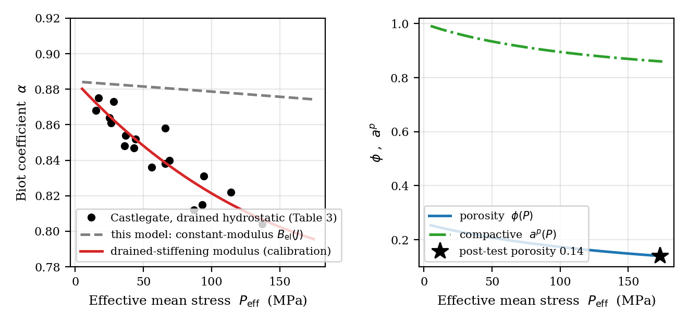
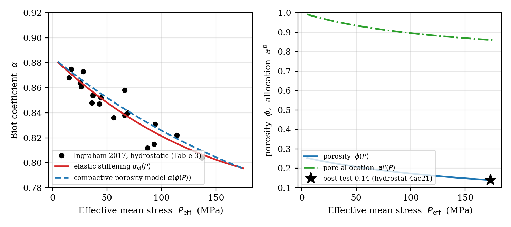
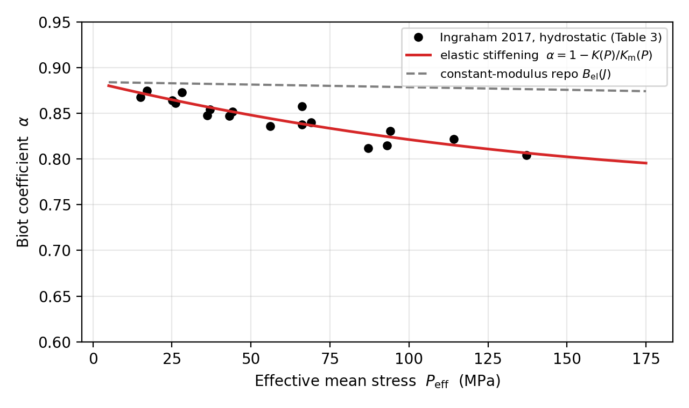

3 · Castlegate sandstone comparison
A drained-sandstone hydrostatic study that positions this paper's model against the
published Ingraham et al. (2017) Castlegate sandstone data. It
quantifies the constitutive ingredient — a pressure- and porosity-dependent drained
bulk modulus — that a quantitative compactive match would require, and interprets the
measured porosity loss as the plastic pore-allocation branch
aᵖ = φs0/(1 − φ).
This is a feasibility / calibration study, not material-specific
physical validation. The red curve in panel (a) and all of panel (b) calibrate
ingredients that are not yet in the constant-modulus model; they identify the
required extension.
Python scripts
-
poroplastic_sandstone_feasibility.py
Calibrated material-point model (step 1): fits
Km(P)andK(P)to the published hydrostatic rows and shows the elastic pressure-stiffening coefficientαel(P) = 1 − K(P)/Km(P)reproduces the measured decline. -
castlegate_compactive_calibration.py
Compactive (cap) plasticity calibration (step 2): anchors a porosity-only drained law to the measured endpoints and infers
φ(P)andaᵖ(P). - plot_sandstone_comparison.py Manuscript figure: measured drained hydrostatic coefficient vs. the paper's constant-modulus elastic coefficient and the calibrated stiffening model.
Figures



Reference data
-
Ingraham et al. (2017) — publisher DOI
Published source (IJRMSS 96 (2017) 1–10) used for Tables 1 and 3. The local PDF copy lives in the gitignored
references/pdfs/directory.
The calibration logic is documented in experimental_literature_review.md and sandstone_comparison_feasibility.md.
Reproduce
make figures # runs plot_sandstone_comparison.py (plus the other figure scripts)